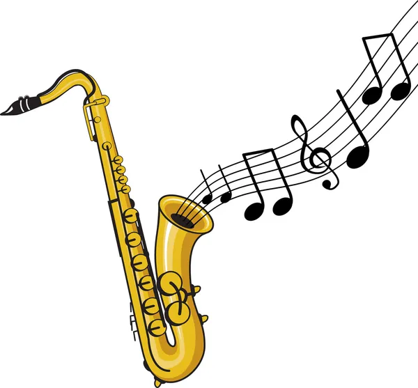
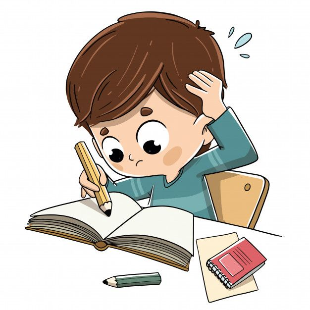

João Vitor Machado Silva
Sobre mim
Me chamo João Vitor, tenho 20 anos e moro na cidade de jandira em são paulo, meu interesse em estudar ADS veio de uma grande facilitação com o uso de computador, e o grande desejo de aprender a programar, sei que ainda posso me tornar um bom programador. Hoje em dia quando paro para pensar aonde estou atualmente, lembro de todas minhas vontades e isso só me motiva cade vez más para atingir um propósito maior. Busco crescer no mercado de trabalho e algum dia ser bom o suficiente para inovar e desenvolver meus próprios programas ou sites.
Hobbies
Jogar jogos

Gosto bastante de jogar valorant e entre outros jogos, é um momento que eu consigo me distrair e consigo me divertir, rir e aproveitar o tempo de qualidade. Existe muitos jogos que jogo e que já joguei e a experiência é única, aliviadora e serve como um calmante.
Tocar Instrumento
Sou músico desde os meus 8 anos de idade, e até o dia de hoje eu toco meus instrumentos, toco saxofone alto e violão, tocar é um hobbie e tem muito significado para mim, tocar me deixa calmo, feliz, admirado e motivado.
Estudar
Estudar virou um hobbie para mim, muita das vezes aos finais de semana sempre há um horario que eu dedico a isso, gosto do fato de eu me dedicar até mesmo nos dias que a gente só pensar em ter um laser sem envolvimentos com as responsabilidades, más comigo é ao contrário, eu gosto bastante de estudar e quando eu estou dedicado, eu fico totalmente focado e consigo obter bastante resultados.
Paises
Paises que eu gostaria de visitar e passar as férias dos sonhos, adimiro muito esses lugares e gostaria de conhecer pessoalmente.